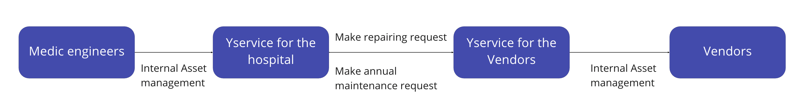
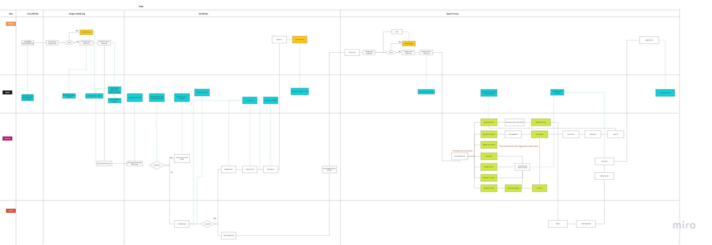
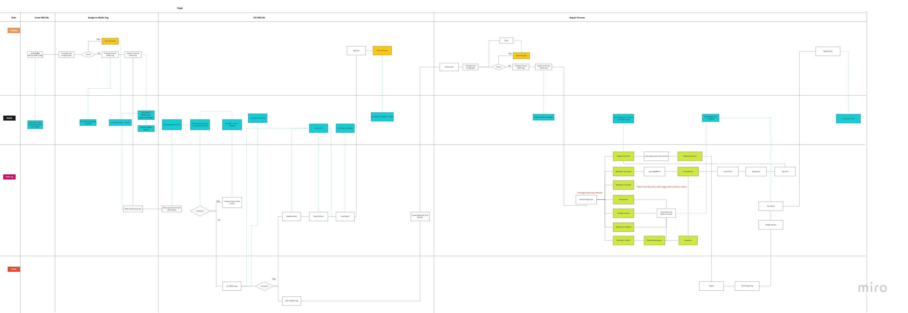
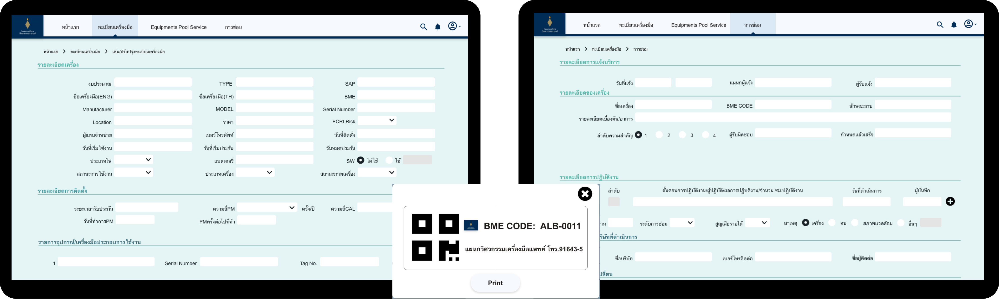
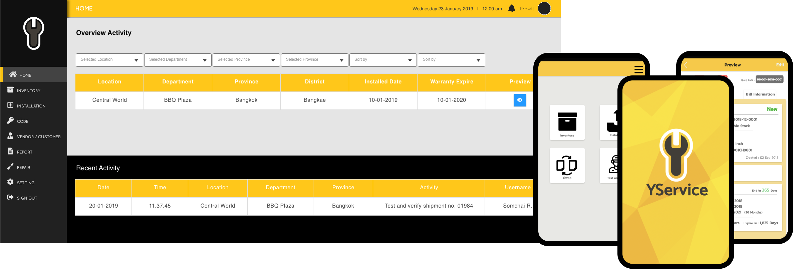

Challenge
By using paper to manage more than a hundred assets in the company, many human errors happen. However, converting a workflow from paper and manual work to a digital one is a big challenge for all stakeholders.
Customer insights
Some of the pain points are very unique which affects a business decision. I will only mention common pain points from each client who operates the entire asset management with paper.
- Many documents were lost when time pass
- There are many missed match data from different departments and vendors
- Assets are lost and reappeared without the staff acknowledge it
- Users Miss many annual maintenances that lead to more workload to catch up
- Users have a difficult problem when auditing the company each year
Two roles experience
As I was a first employee of the startup, I took over two main positions in the company
Business Analyst
As a Business Analyst, I focused on discovering user pain points, research business needs, looking for a business opportunity, and identifying an unclear product value proposition and experience.
At that time the CEO had only an idea which never is validated or developed. I worked together with the CEO to develop the business plan, strategy, and roadmap for the company. But I will not explain in more detail here.
My role
- Planned a business roadmap and startigies
- Did competitors and marketing research
- Managed documentation, user flows and QA
- Led the crossed functional team and monitored tasks and timeline
My role
- Created UX design process and guidline for the team
- Designed wireframe, prototype, UI design the end to end from clients to vendors
- Performed qualitaive and quatitative research
- Conducted A/B testing, usability testing and analysis
UX/UI designer
After the work of my business analyst role, I researched design opportunities, competitors, and developed an initial product concept. I focused on exploring and discovering the possibility of the service, which feature and flow should be a benefit to the stakeholders, which technology and hardware will be capable of. I was responsible for designing the UX and UI of the whole initial application. I established a UX process for the company that can be a guideline for today’s work and product strategy.
Product overview
Service blueprints overview
To build up a deep understanding of our complex user flow from scratch as well as how to transform the paper working process into a digital one, I drove continuous research initiatives. Together with a team, I ran interviews and field observation, In parallel, I created service blueprints to define and test hypotheses of user workflow. After the stakeholders confirmed the initail flow, I developed the design in the next step. This an example of blueprints
 

Yservice for the hospital
How does it help?
- By converting the paper form to a digital form on the website, there will be always a backup data
- The QR code with a serial number helps users to quickly track the asset and locate them. The losing problem will be reduced
- Notification will send out automatically to vendors when there is a time to do annual maintenance. This reduces users' workload
- With a better asset management system, there will be no problem when auditing a company
Yservice for Vendors
How does it help?
- There will be no lost document between vendors and their customers
- They can track their work from each customer and could perform work more efficiently.
- Create a better communication between vendors and their customers
What I have learned
- Don't try to follow and covert every paper workflow to a digital one. We should adjust it to a new environment and make it better
- Working with a public sector might need a lot of time and effort to learn their system. We should have a structured plan and prepare the backup plan for the worst case.